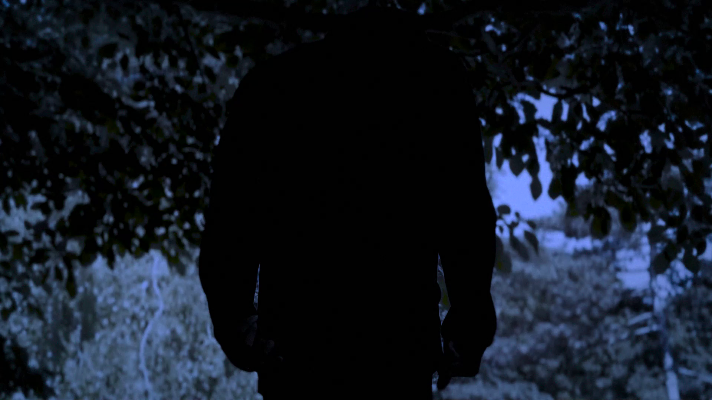
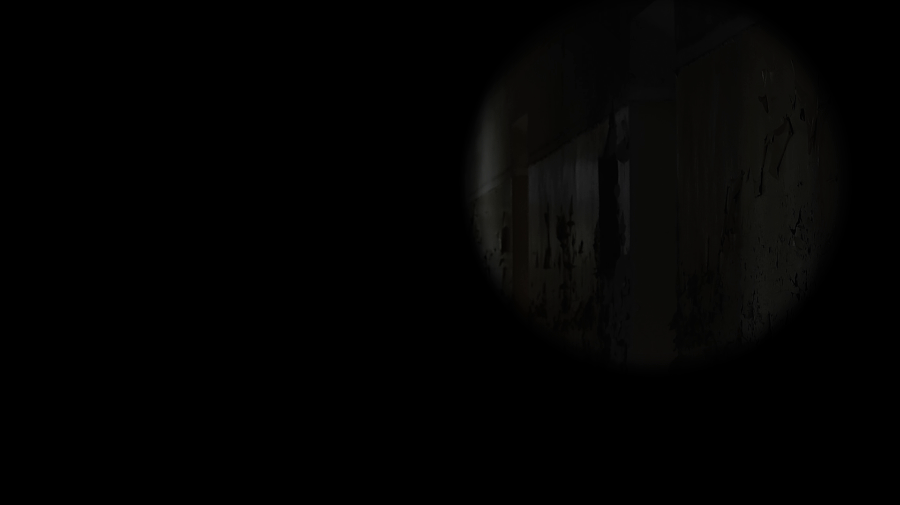
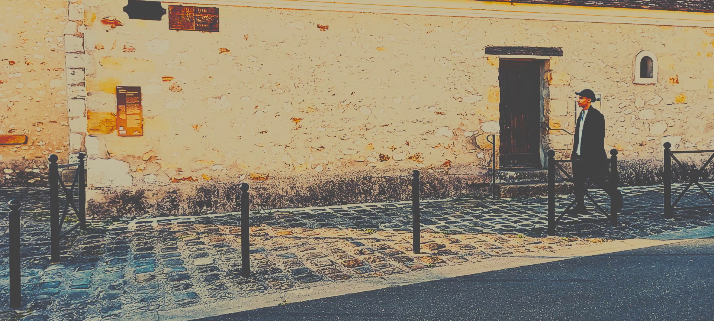
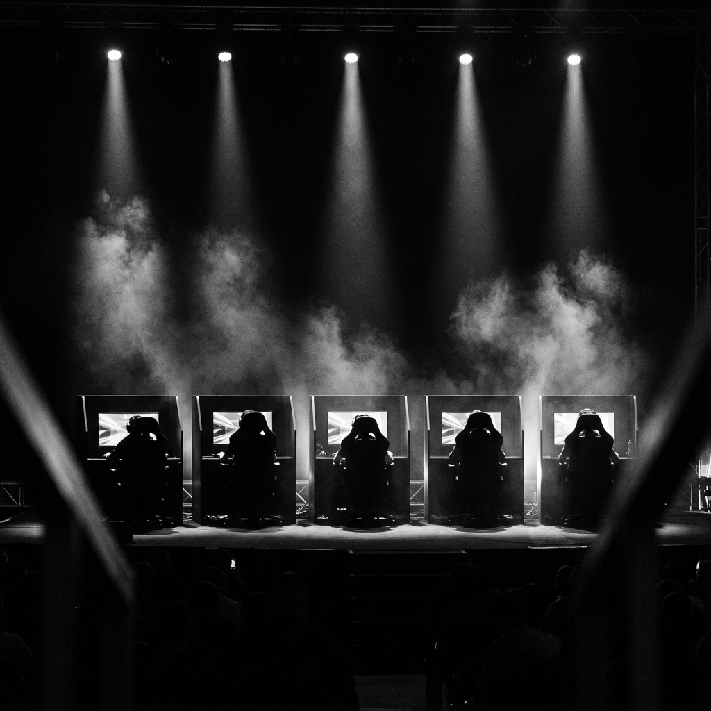
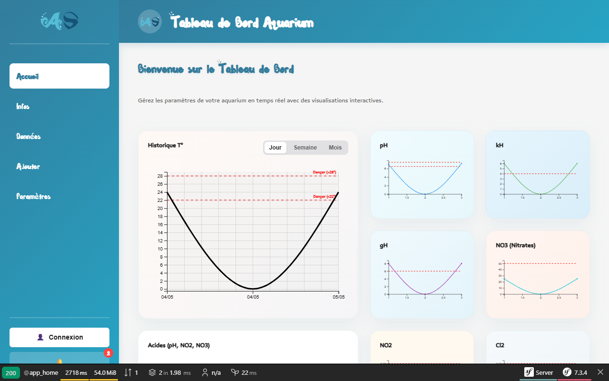
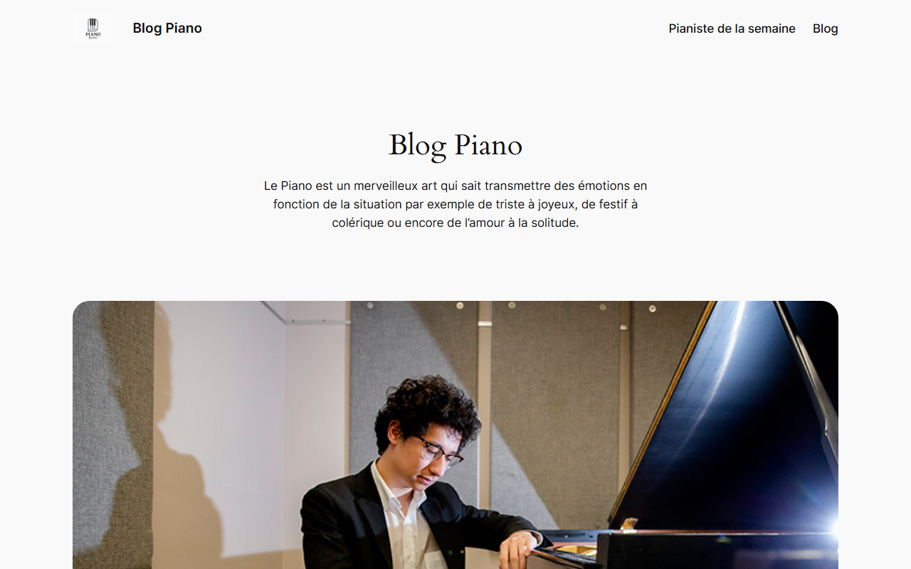

Direction artistique & spot publicitaire : création de la marque Kisen de A à Z (marketing, branding, affiches, direction artistique). Spot publicitaire Premiere Pro réalisé pour incarner fidèlement cette identité.
Découvrir le projet →
Création d'une séquence cinématique d'ambiance et de tension sous After Effects. Intégration de lumières virtuelles, masques, caméra 3D et effets de secousse (wiggle).
Découvrir le projet →
Production audiovisuelle : clip libre calé sur toute la durée de la musique choisie. Comprend la production d'un dossier de production technique et une analyse musicale poussée.
Découvrir le projet →
Réalisation d'une vidéo promotionnelle pour l'Arène d'Évry. Montage dynamique rythmé sur la musique avec des transitions fluides.
Découvrir le projet →
Application web réalisée en collaboration avec la filière Génie Biologique (GB). Cette application web permet la gestion et le suivi physico-chimique de leurs aquariums.
Découvrir le projet →
Création complète d'un site thématique sur le piano et la musique classique, développé en local sous Docker puis déployé sur Alwaysdata.
Découvrir le projet →Je m'appelle Willem Dulormne, et je suis actuellement élève en deuxième année de MMI (Métiers du Multimédia et de l'Internet). Passionné par les univers numériques et interactifs, je consacre une grande partie de mon temps à mes passions principales : la création audiovisuelle et le développement web.
Télécharger mon CV (PDF)Conception d'identités visuelles, retouches d'images et modélisation d'interfaces centrées sur l'utilisateur. Création de chartes graphiques, de maquettes interactives et de visuels vectoriels :
Création d'édits dynamiques, de clips rythmés et de vidéos promotionnelles. Maîtrise de la chaîne de montage (rythme visuel, variations de vitesse, transitions) sur mes applications de prédilection :
Conception d'interfaces interactives modernes et programmation de solutions logicielles orientées objet et web via mes langages et outils maîtrisés :
N'hésitez pas à me contacter pour toute collaboration, projet créatif ou simple échange d'idées.
willem.dulormne@gmail.com